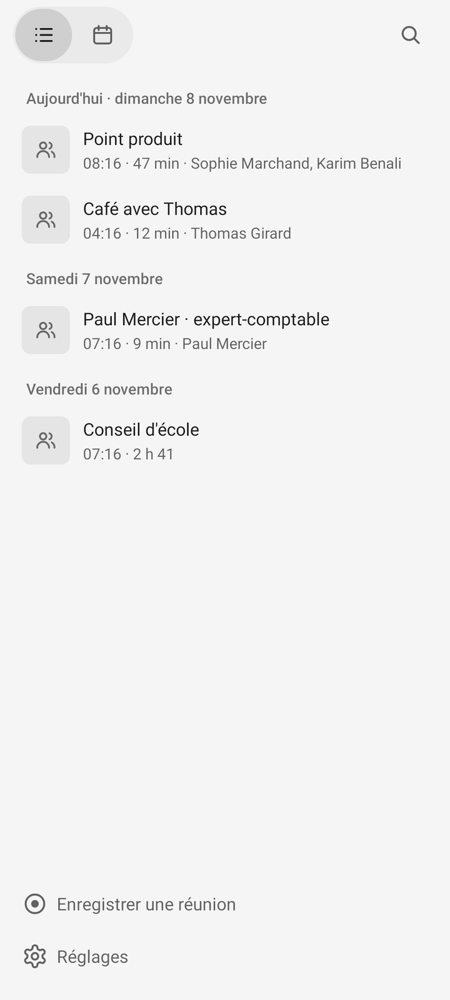
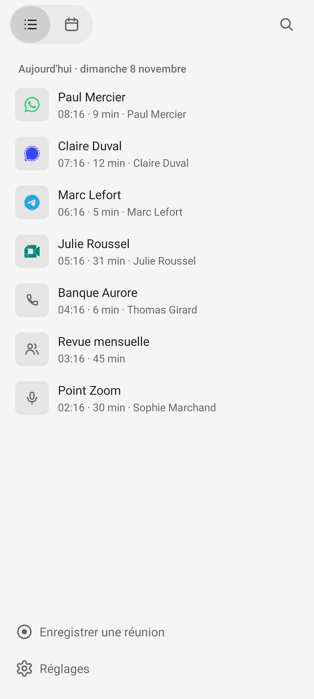

Chaque conversation montre d'où elle vient
AvantLe même micro devant chaque conversation.
AprèsLe logo de WhatsApp, Signal, Telegram ou Meet, un combiné pour un appel du réseau mobile, deux personnes pour une réunion, le micro pour une note. Dans la liste, en tête d'une conversation et dans la recherche.



Avec un Mac pas encore à jour, le téléphone le devine de son propre enregistrement.